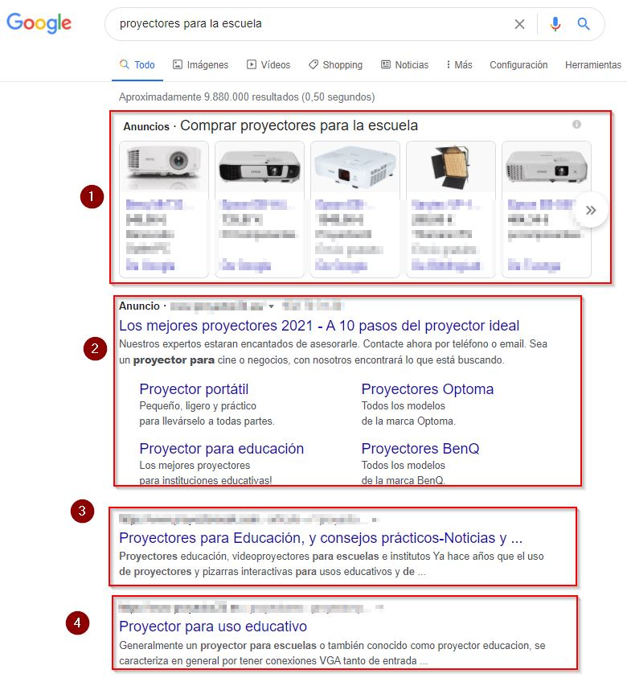
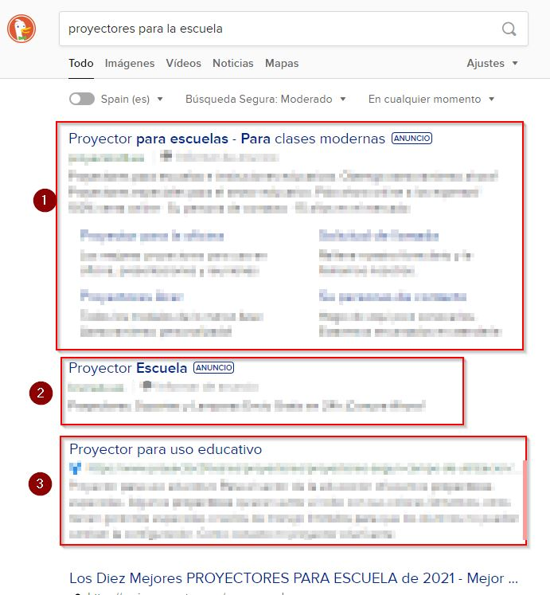

Buenas prácticas buscando en Internet
Los primeros resultados de un navegador no siempre son los mejores
Si te fijas en esta búsqueda:

- Nos muesta anuncios de su guia de compras
- El primer resultado (y a veces el 2º, 3º..) son anuncios
- Este resultado se repite en el anterior punto 2
- Este resultado ya empieza a ser bueno
P: ¿Qué hay en otros resultados? R: Casi nadie lo ve. Ese es el problema, por lo tanto las empresas pagan fortunas para mejorar sus rankings
Si quieres enterrar a un muerto y que nadie lo descubra hazlo en la segunda página de Google.
Rocio Garcia Algora autora del curso Posicionamiento SEO de Aulargón
¿Por qué siempre usamos el mismo navegador?
Por costumbre y por imposición de que se nos instala navegadores (Chrome, Internet Explorer...) y buscadores por defecto (Google, Bing, ...)
Utilizan estrategias agresivas para que uses sus productos
¿Por qué tienen tanto interés?
Por dinero, por supuesto, cada consulta crea unos 0.005€ de beneficio ¿¿muy poco?? ¡¡ pero si son billones de € !!!

¿Hay otros buscadores?
DuckDuckGo https://duckduckgo.com

Es nuestro favorito, porque respeta los principios de software libre:
- No vende nuestros datos a terceros
- Bloquea rastreadores publicitarios
- Tienen siempre el control de tus datos
- Historial de busqueda siempre en privado
- No los pasa los datos a terceros.
- El motor de búsqueda es algo híbrido, tiene su propia araña web pero también utiliza Yahoo.
Si hacemos la búsqueda que hicimos de Google

- Anuncio, de algo tienen que vivir ¿no?
- Otro anuncio
- Ya empieza con buenos resultados.
Ecosia https://www.ecosia.org/

Destina el 80% de los beneficios en plantar árboles. La desventaja es que usa el motor de búsqueda de Bing.
LILO https://search.lilo.org/

El 50% lo dona a proyectos. Tú puedes decidir a qué proyectos quieres ayudar
Cambiar de buscador
Si quieres que tu navegador utilice esos buscadores por defecto, tienes que hacerlo manualmente. Aquí cómo hacerlo por ejemplo con Ecosia o las mismas páginas DuckDuckGo, Ecosia, Lilo... tienen buenos tutoriales)

Ciudadanía digital por Alfabetizacion: INTEF www.http://aprende.intef.es/ y Seguridad : Javier Quintana [CATEDU] bajo licencia Creative Commons Reconocimiento-NoComercial-CompartirIgual 4.0 Internacional License.